一篇论文，只有理解了所提出的问题是什么，为了解决这个问题提出了什么方法，以及有自己的思考和收获，才算是吸收完这篇论文。
# Low-Light Image Enhancement
# 2024 CodeEnhance: A Codebook-Driven Approach for Low-Light Image Enhancement(CodeEnhance)
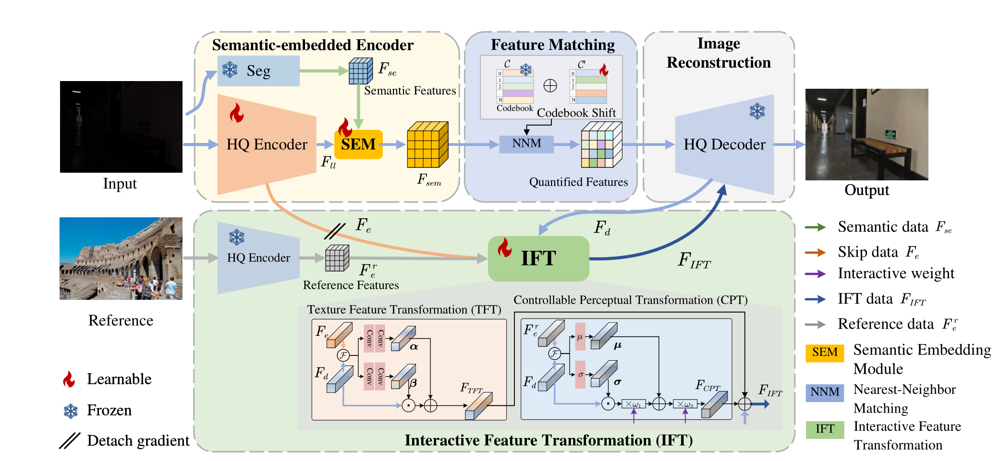
思考
- 利用
codebook从High-Quality图像中学习先验。 - 在
Unet编码器端并行设计预训练的语义信息提取网络SEE，在编码器末端设计一个语义信息融合模块SEM，将语义信息与图像特征融合。 - 因为
codebook学习的先验所用数据集和第二阶段训练所用数据集不同，设计了一个codebook偏移机制CS处理引入 codebook 产生的数据分布偏移问题。 - 在预训练的解码器末端附加一个特征转换模块
IFT。一方面，利用参考图像Reference丰富解码器High-Quality解码图像的信息，另一方面，在IFT内的CPT加入两个人为设计的 $$\omega$$ 以实现可控式图像提亮。
创新
很明显知道这篇低光的论文是基于
Towards Robust Blind Face Restoration with Codebook Lookup Transformer这篇文章的工作，所以创新是相对于Towards Robust Blind Face Restoration with Codebook Lookup Transformer的创新。我们可以把Towards Robust Blind Face Restoration with Codebook Lookup Transformer称为base work
- 在
encoder并行引入一个语义感知模块，与encoder通过一个语义融合模块融合。这个做法是借鉴了 23 年ICCV的一篇与语义分割结合的低光工作：Learning Semantic-Aware Knowledge Guidance for Low-Light Image Enhancement。 IFT源于base work的CPT。但是base work的CPT是将低质量图作为参考，而本文章是把ground-truth作为参考。- 发现
codebook两阶段输入的数据分布不一致，提出代码本数据偏移机制。这是较base work优秀的地方。
所以很明显，我们不应该是将别的领域的东西套过来到本领域去用，而是把自己领域的东西尽可能往别的领域靠、结合，才是更好的。要针对别的领域的工作，提出一个基于本领域的改进。
不足
- 极其依赖
ground-truth和reference。codebook的训练依赖high-quality图像进行重建不说，IFT需要一张正常光照的图作为参考。训练时期，IFT尚且可以。然而测试如果再依赖一张正常光照的图像作为reference，那就没有什么应用意义。虽然通过这种方式能够实现光照恢复动态化，但缺点也很明显。 - 解决
codebook的数据偏移问题过于粗糙，引入可学习的codebook shift增加了训练的困难。
# 2023 CVPR Learning a Simple Low-light Image Enhancer from Paired Low-light Instances(PairLIE)
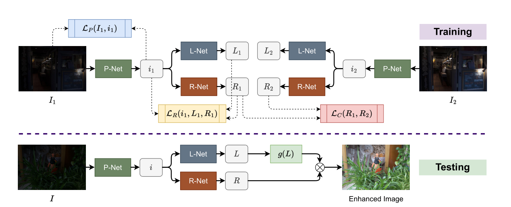
思考
- 使用两张低光的图片，结合
Retinex理论，实现不需要额外设计手工先验的无监督低光增强。 - 在使用
Retinex分解前，使用一个映射网络有效增强分解准确率。 - 将超分辨率中多图像辅助修复单图像的做法引入到低光照增强领域中，为多图像辅助修复单图像提供了低光照增强的做法。
- 训练阶段，两张低光图经过
L-Net得到的结果并未充分利用。 - 这个工作更重要的意义在于，将多图像的信息辅助单图像的恢复。然而作者的做法是，多引入图片就设计一个新的，与待恢复图像相同的网络架构，即 L-Net，R-Net 和 P-Net。倘若扩展到更多图像，不可能再同样为每一张新引入的图片设计一整套网络。因此这种做法限制了多图像的信息辅助单图像的恢复，局限于双图像。
- 推理阶段，
L-Net估计得到的L只进行一个指数变换，得到 $ L^\lambda $ 就作为提亮后的光照，这种做法能否优化？R-Net的输出R并未经过任何处理，是否影响了性能的上限？
# 2024 DI-Retinex: Digital-Imaging Retinex Theory for Low-Light Image Enhancement(DI-Retinex)
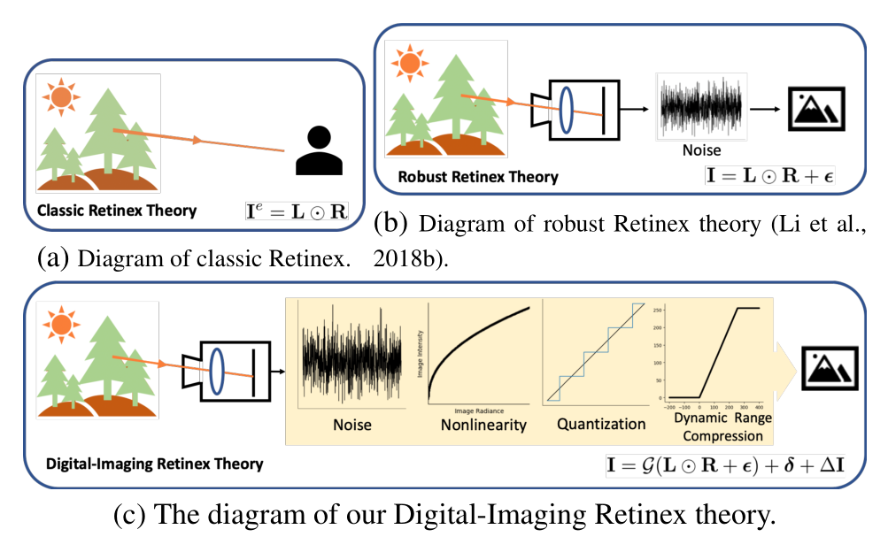
思考
- 指出经典的
Retinex理论存在缺乏考虑噪声的问题，提出了一个新的适用于数码成像的Retinex理论DI-Retinex。 - 根据
DI-Retinex理论，重新规定了光照提亮的范式。范式中的偏置项即为经典Retinex理论未考虑到的缺陷。 - 为
DI-Retinex理论设计了两个损失，分别是将正常光照退化为低光图像的反向退化损失以及噪声的方差抑制损失。 - 相对于传统的
Retinex理论以及改良版本的Retinex理论，提出的DI-Retinex理论考虑更加全面。
# 2024 CVPR Unsupervised Image Prior via Prompt Learning and CLIP Semantic Guidance for Low-Light Image Enhancement
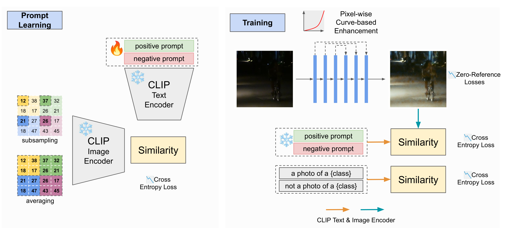
前身工作是
2023 ICCV Iterative Prompt Learning for Unsupervised Backlit Image Enhancement
存疑
- 在
prompt learning阶段要训练positive prompt和negative prompt，这两个prompt是怎么初始化的？形式是怎么样的？ - 在
training阶段，使用曲线估计提亮后面的部分没看明白。
# 2024 GLARE: Low Light Image Enhancement via Generative Latent Feature based Codebook Retrieval(GLARE)
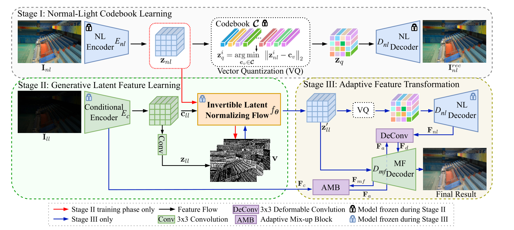
思考
- 第一个将
codebook引入低光照图像增强领域的工作。将预训练的VQGAN进行微调以更适合低光照图像增强背景。 - 为了解决
codebook难题之阶段前后数据分布不一致，提出一个逆向潜特征正则流（Invertible Latent Normalizing Flow）的操作，将低光特征经过转换，逼近正常光照的特征，以更加适合codebook适用的数据分布。 - 为了解决
codebook难题之纹理缺失，提出一个双译码器架构实现将先前Encoder编码的特征与codebook检索出来的特征融合。 codebook的工作，都有泛化性相对不足的缺点。在推理阶段，codebook是在训练集上训练的，得到的是训练集的先验知识，在后续与测试集low-quality特征融合。因此需要从codebook得到知识后，需要有进一步优化操作。
# 2023 ICCV Implicit Neural Representation for Cooperative Low-light Image Enhancement(NeRco)
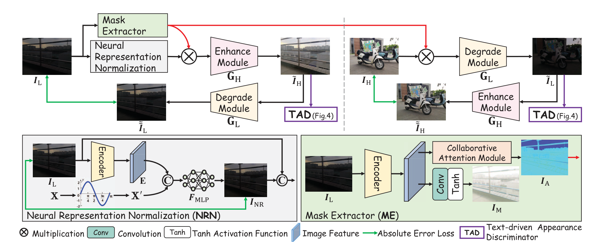
这次我们先只看这个工作的
NRN部分，也就是Neural Representation Normalization。
思考：
- 将隐式神经表征
Implicit Neural Representation第一次引入到低光照图像增强领域中。 - 将隐式神经表征与低光背景很好地结合，并且解释了为何能实现去噪。
- 对隐式神经表征了解还不够多，应该往这个领域多研究研究。
# 2024 CVPR ZERO-IG: Zero-Shot Illumination-Guided Joint Denoising and Adaptive Enhancement for Low-Light Images(Zero-IG)
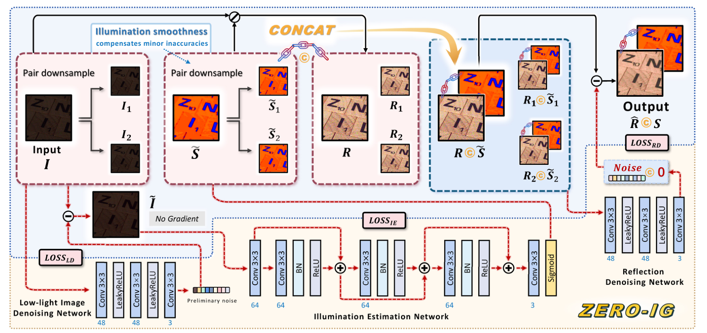
思考：
- 重新思考
Retinex的理论，认为光照的平滑性能消除光照的噪声毛刺，所以对一个经过去噪后的低光图像提取的照度能近似正常光照下的照度。 - 将
Noise2Noise的思想引入到低光照图像增强领域，与Retinex理论很好地结合。 - 将正常光照的照度与带噪声的反射量拼接，然后使用
Noise2Noise的方式去噪。在过程中用损失约束光照全程一致，可以是网络更加关注于反射量的去噪。另外，与光照拼接，能够引导网络在去噪时关注哪些区域需要提亮，哪些区域需要抑制光照。所以，这较单纯用带噪声的反射量去噪更加有效。 - 借鉴
Noise2Noise思想，将噪声图下采样为两张图片，并彼此构建自监督的方式，避免了对配对数据集的依赖，也无需学习特定噪声分布即可应用在低光任务，实现zero-shot无监督。 - 在为反射去噪时，将光照与反射进行拼接，网络学习过程保持光照不变，使得网络更加关注对反射的去噪，这大大提高了去噪的效果。
# You Only Need One Color Space: An Efficient Network for Low-light Image Enhancement
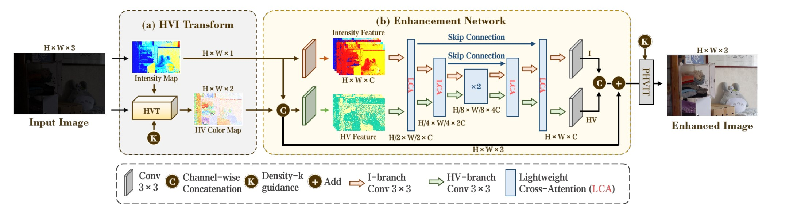
<img src="../../assets/cidnet2.jpg" alt="image" style="zoom:50%;" />
贡献：
- 为了解决传统
sRGB色彩空间存在的颜色与亮度存在的耦合问题，以及从sRGB色彩空间转换到HSV空间存在的，由于一对多映射导致信息丢失问题，本文提出了一个全新的HVI色彩空间。通过引入三个可学习的参数和一个可学习的函数提升HVI色彩空间的稳定性，同时解决了一对多映射导致的信息丢失问题。 - 将
HVI空间的图像特征分解为HV颜色特征和 I 强度特征，专门设计一个双支网络分别处理这两个信息，并用交叉注意力为两个特征信息建立交互。 - 提出了一个基于交叉注意力的模块
LCA，促进HV特征和I强度特征的信息交互。
# Image Dehazing
# 2023 CVPR RIDCP: Revitalizing Real Image Dehazing via High-Quality Codebook Priors
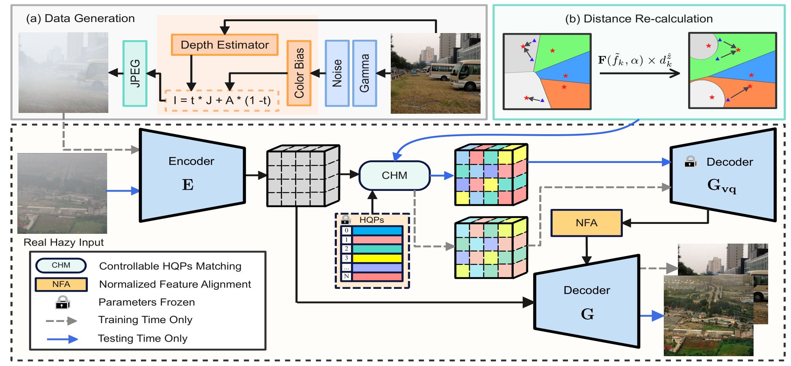
贡献
- 第一个将
codebook方法引入到去雾领域的工作。 - 设计了一个可控匹配机制
CHM替代最近邻匹配机制。具体来说，在最近邻匹配公式内的欧氏距离前乘以权重，增强匹配的效果。权重是一个自然指数，以系数a与f乘积为底。系数a通过最小化codebook特征与encoder输出特征的KL散度得到。系数f是codebook激活频率与encoder激活频率的差值（说实话论文中这个什么激活频率没交代是怎么得到的，没看明白，大概理解就是codebook与encoder的特征距离） - 设计一个双译码器，通过一个归一化特征匹配
NFA模块，将第一个译码器 $ G_{vq} $ 的输出与encoder的输出进行特征融合。
创新
- 可控匹配机制
CHM改良了最近邻匹配机制，减轻数据分布偏差的问题。
不足
- 在可控匹配机制
CHM的实现上面，前面提到，通过乘以一个指数权重改良最近邻匹配，这个指数以两个系数乘积为底，第二个系数f，论文交代十分模糊，称为codebook激活频率差，我理解是两个数据分布的距离。在代码中也不详细，f通过一个预训练数据给出，预训练也不知道如何训练得到的。
# Vision Prompt Learning
# 2024 Towards Effective Multiple-in-One Image Restoration: A Sequential and Prompt Learning Strategy(MiOIR)
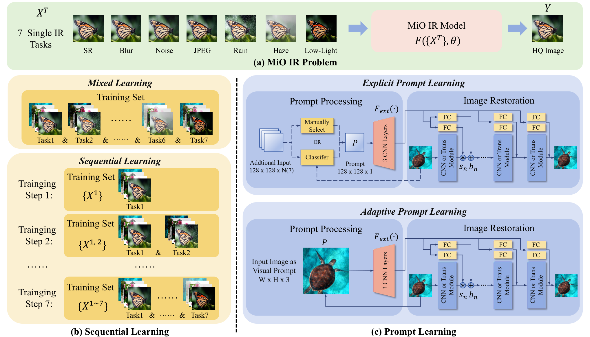
贡献
- 指出
all-in-one模型的问题：考虑的退化任务少；每一次训练只在一个特定的退化任务数据集上训练，有可能导致灾难性遗忘。提出序列学习，每次训练的数据，是上次训练的数据与新特定退化类型数据的叠加，有效应对灾难性遗忘。 - 使用两种极端的提示学习方法，帮助模型识别特定退化任务，分别是精确提示学习与自适应提示学习。
- 精确提示学习：通过预先训练提示，提示分类器，在下一阶段通过输入的退化图片筛选出适合的提示，引导特定退化任务的图像恢复。
- 自适应提示学习：通过输入的退化图片经过卷积处理得到提示信息，引导特定退化任务的恢复。
创新
- 第一次将序列学习引入到图像恢复领域。
不足
- 个人认为，自适应提示学习不能算作提示学习，更像是特征融合。
# Blind Face Restoration
# 2022 NeurIPS Towards Robust Blind Face Restoration with Codebook Lookup Transformer(CodeFormer)
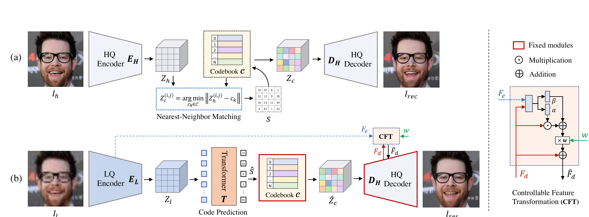
贡献
- 将
codebook引入到人脸修复领域中。 - 指出
codebook索引方式即最近邻特征匹配方法应用到图像恢复领域的不足在于，输入的Low-Quality图像因为各种类型的退化严重导致Low-Quality与codebook的数据分布严重不匹配，进而造成了codebook检索的困难。因此，为了能够更好地进行codebook的检索，使用Transformer进行codebook的检索，提高检索精确度。 - 如果仅仅将
codebook提取出来的特征进行解码，由于codebook是从其他数据集上训练得来的，因此解码得到的特征与当前数据集的GT会有很大差异，所以有必要将输入与codebook的特征进行融合，以得到一个质量更优于Low-Quality，数据分布更接近High-Quality的图片。进一步，引入一个可控的特征转换器CFT，通过一个人为设置的超参数w，实现Encoder到Decoder数据流的控制，即实现可控式的特征融合。
创新
- 将
codebook引入到人脸修复领域。 - 提出最近邻特征匹配在图像恢复的不足，为未来的工作提供了很好的指引。
- 设计了一个可控的特征融合器，进一步弥补了
codebook的不足。
不足
- 通过单一的
Transformer块叠加进行codebook索引，造成索引耗时长的问题。
# Image Derain
# 2024 CVPR Bidirectional Multi-Scale Implicit Neural Representations for Image Deraining
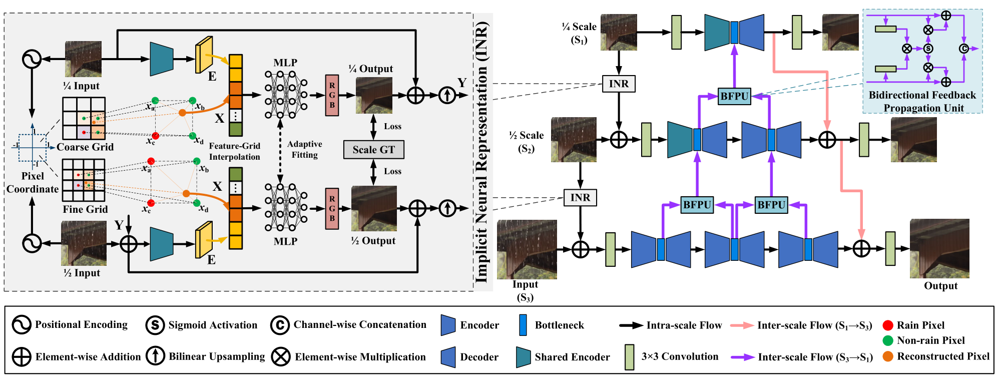
这里先主要研究前面的
Implicit Neural Representation部分。
贡献
- 将隐式神经表征第一次引入图像去雨领域中，以更好地帮助模型学习普遍雨纹退化特征进行退化的去除。
- 将隐式神经表征与多尺度网络结合，能够在多尺度信息流动中进行退化的去除。
创新
- 在每个尺度的网络前引入
Implicit Neural Representation去除雨纹，形成一个在尺度上的级联Implicit Neural Representation结构。
不足
（暂时未知）
# Image Denoise
# 2023 CVPR Zero-Shot Noise2Noise: Efficient Image Denoising without any Data(ZS-N2N)
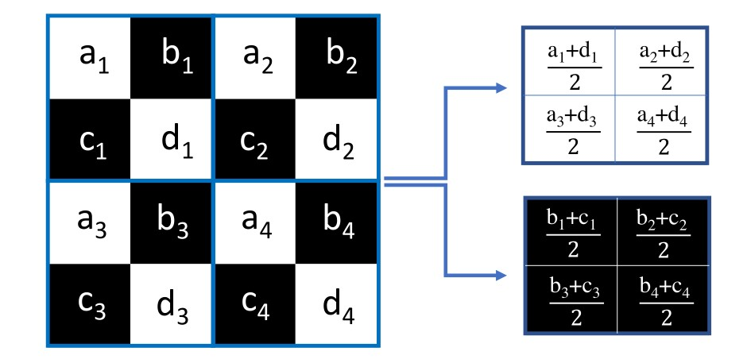
Contributions：
- They offered a downsampling-based unsupervised method. They downsampled the noisy image into two patches by using a special method at the pixel-wise level , and subsequently used two-layer convolution kernels to process the two patches.
- Mapping between noisy patches can be equivalent to denoising the input image, where a consistency loss is applied to constrain the mapping process.
- The two patches were considered as similar as possible, so there was a residual loss applied to the mapping process.
Innovations：
- By integrating the Noise2Nosie and Neighbour2Neighbour methods, the paper offered a unsupervised learning paradigm.
- It was very light-weight.
# Image Enhancement
# 2024 CVPR Color Shift Estimation-and-Correction for Image Enhancement(CSEC)
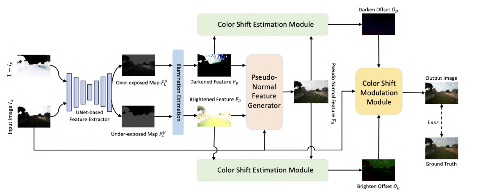
贡献：
- 通过
PCA分析发现一些图像增强数据集的图像里有欠曝光和过曝光的区域，而且这些区域的像素点特征存在明显的相反性。基于此发现，作者设计了一个能够处理一张图像同时存在过曝光和欠曝光的网络。作者利用一个基于Unet的特征提取器，提取图像中相反的两个曝光特征。 - 两种相反的曝光特征一定存在一个特征，是这两种特征的正常参照。作者为曝光程度不同的两种图像分别设计了颜色偏移估计模块，估计出颜色方面的偏移以获取正常参照的特征。鉴于可变形卷积能够为卷积核估计出图像像素点相较于卷积核的偏移，作者认为通过可变形卷积能够估计出过曝光和欠曝光相较于正常参照的颜色偏移。因此设计了
COSE模块分别估计颜色偏移。 - 为了利用估计的颜色偏移去纠正原始图像中过曝光和欠曝光的特征偏移，作者设计了一个
COMO模块，利用交叉注意力分别将原始图像的特征与过曝光颜色偏移特征和欠曝光颜色偏移特征进行建模，得到最后的增强结果图。
创新：
- 发现同一张图像中的过曝光和欠曝光存在特征相反性，并通过估计曝光的参考特征来实现同时纠正一张图像中的过曝光和欠曝光。
- 在曝光的参考特征辅助下，对过曝光和欠曝光的区域分别估计颜色偏移，借鉴可变形卷积的思想去处理颜色的特征偏移。
- 利用交叉注意力建模三个特征信息：原始图像、过曝光偏移特征、欠曝光偏移特征。
# 2024 CVPR Empowering Resampling Operation for Ultra-High-Definition Image Enhancement with Model-Aware Guidance(LMAR)
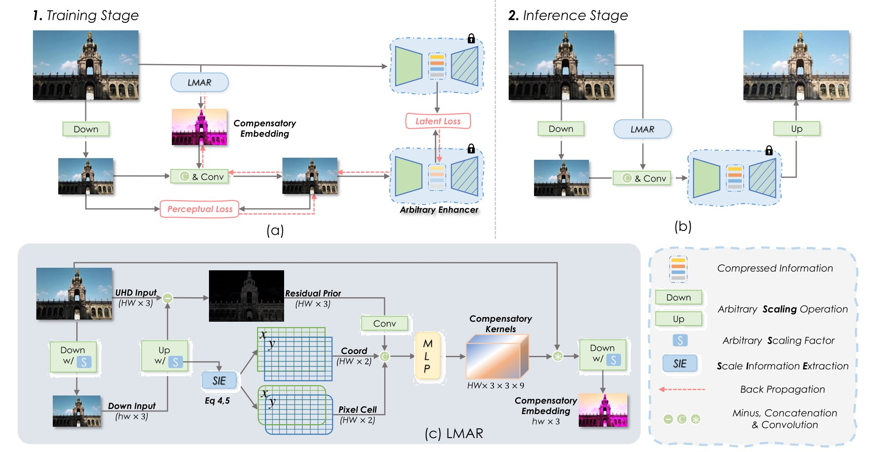
贡献：
- 这篇文章发现通过插值降低分辨率后进行增强再上采样会导致信息丢失和性能下降的现象。具体来说，有如下方面：下采样降低分辨率导致了一些高频率的信息损失；高分辨率下采样为低分辨率，两种特征分布存在差异；传统的下采样的方法与中间增强模型无关，并未考虑模型对输入的偏好（如对特定方向的边缘或低频颜色更敏感），因此无法为模型保留偏好信息。作者提出了一个叫做
LMAR的方法解决上述问题。 LMAR通过结合隐式神经表征，估计出下采样图像的补偿信息，嵌入到下采样图像中，使得低分辨率输入在中间增强模型的特征空间与原始UHD高分辨率图像的中间层特征保持一致。
创新：
- 发现下采样和重采样由于传统插值方法导致的信息丢失问题，并设计了一个基于模型感知的方法补偿损失的信息。
# All-in-One Restoration
# 2024 LoRA-IR: Taming Low-Rank Experts for Efficient All-in-One Image Restoration(LoRA-IR)
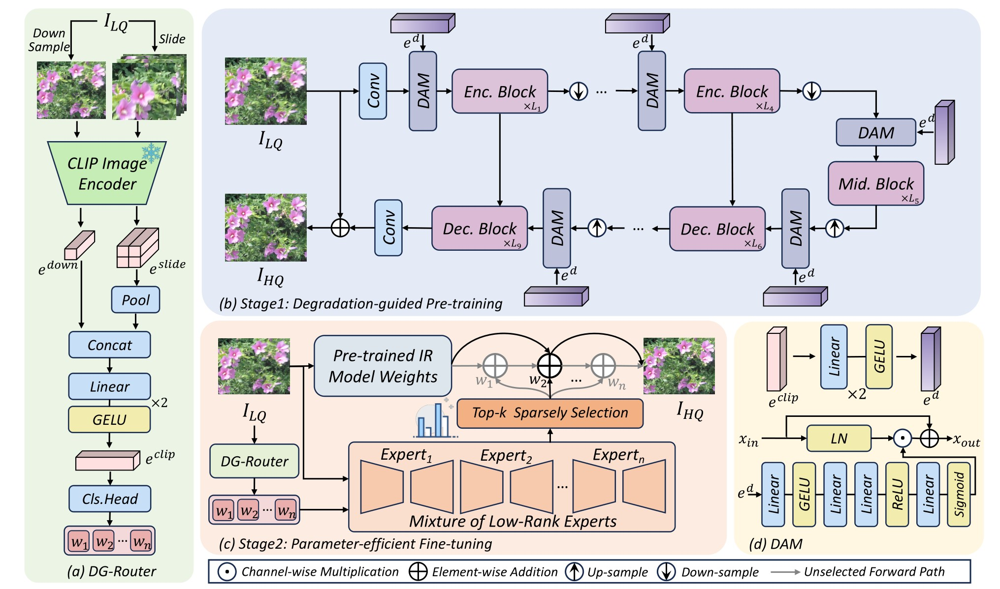
贡献：
- 针对单一退化设计专用模型的传统方法无法泛化到混合退化场景，而现有的
All-in-one模型虽然能够处理多种退化，但存在参数冗余、计算效率低、无法捕捉退化间关联性等问题。为了解决这些问题，作者引入了LoRA作为MoE的专家处理网络，并通过路由引导来选择特定的专家处理特定的退化。 - 为了针对图像选择特定的专家对退化进行处理，
LoRA-IR的退化引导路由器DG-Router使用CLIP模型的强大图像表征能力，提取退化表示。其中，为了避免因下采样到CLIP特征空间时由于分辨率降低带来的信息损失问题，DG-Router通过将滑动窗口与下采样结合来解决这个问题。另外，使用MLP和池化技术融合下采样的全局信息和滑动窗口的局部信息，生成了更加鲁棒的退化表示。 - 预训练阶段，通过
DAM（基于通道注意力的退化引导自适应调节器）将退化表征信息注入到统一的恢复网络中，增强特征的退化表示使得模型获得对特定退化的感知。微调阶段，基于MoE架构，借助DG-Router生成的退化表示动态选择多个低秩专家，进一步提升模型对未知退化的泛化能力。
创新：
将
LoRA引入到图像恢复领域。通过LoRA集成到MoE的具体专家中，实现更高效的特定退化处理。借用
CLIP强大的图像表征能力获得退化表示。结合滑动窗口和下采样缓解图像分辨率降低带来的信息损失。
# Image Motion Deblur
# 2024 CVPR Spike-guided Motion Deblurring with Unknown Modal Spatiotemporal Alignment(UaSDN)
- 传统 RGB 相机成像的各个帧之间存在时间间隔未被利用，导致了图像在时间维度的信息缺失，引发模糊问题。另外，传统 RGB 相机成像通常会因为曝光、极端环境而带来图像的纹理、结构信息缺失。
- 脉冲相机的时间分辨率高，能够准确获取连续时间内的成像信息，能为 RGB 相机成像补充关键信息。
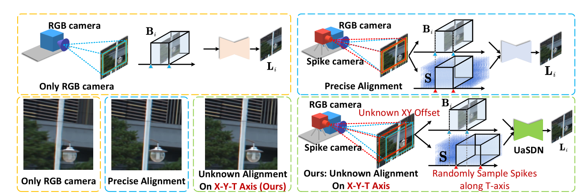
- 引入脉冲相机，要求成像在空间、时间上对齐，这是十分困难的事情，这个工作提出在不知道时空对齐关系的情况下，
UaSDN通过神经网络学习脉冲成像和 RGB 成像的时空对齐关系。 - 某一曝光窗口的模糊图像帧，是曝光窗口所有时刻的清晰图像帧的平均值。
- 本质上其实是引入一种新形式的先验知识，或者也可以说是一个多模态的工作。脉冲和帧是两个不同的模态，脉冲是帧的提示信息。经过 网络处理的脉冲序列实际上是灰度图序列，穿插到后续阶段的网络中引导恢复。
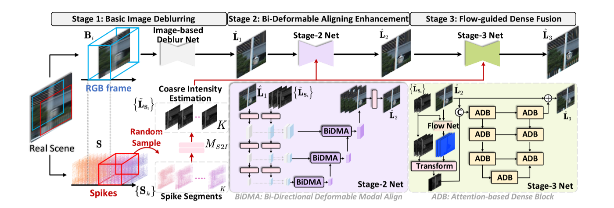
- 二阶段用变形卷积对称地处理两个模态的信息并融合，三阶段用光流方法进一步融合。
- 实际上这个工作并没有使用到实际的脉冲相机，而是在原有的数据集的基础上用插帧的方式模拟脉冲相机的超高时间分辨率效果。而且方法长时间未开源，真实效果存疑。
- 一段话总结：因为考虑到，某一个时间内的模糊照片是这个时间内所有时刻的清晰照片的平均值，所以是不是说明其他时刻的清晰照片能够辅助恢复模糊照片，只要神经网络知道足够多这个时间内其他时刻的清晰照片的情况，就能学习到物体高速运动的方向，就能去除模糊。
# 2024 CVPR Efficient Multi-scale Network with Learnable Discrete Wavelet Transform for Blind Motion Deblurring(MLWNet)
- 文章指出现在去模糊中的多进多出结构（
MIMO）的若干问题：需要人工合成不同尺度分辨率的下采样图像，容易进一步引入退化；低分辨率经常通过简单的插值方式合成为高分辨率的图像，既不高效，也不足够有效。 SIMO以原本的图像作为输入，以网络学习的方式，得到若干尺度的下采样图像，然后分别输出对应尺度的恢复图像，避免了人工合成下采样图像的问题。- 像 UNet 这样的多尺度框架，特征在低分辨率虽然在空间尺度上保留着一定的语义信息，但是纹理细节受到压缩，因此高频信息的恢复是有必要的。
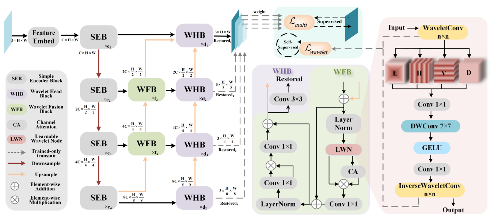
- 离散傅里叶变换
DFT通常难以处理突变信号，而在信号领域一个更好的替代方法就是离散小波变换DWT，作者发现了小波变换与卷积上的联系，认为在原始信号上用小波基分解可以被视为使用特定卷积核的卷积操作，据此设计了2D-DWT，去学习图像的模糊方向性。 LWN模块中的小波卷积（2D-DWT）将图像特征分解为低频、水平高频、垂直高频、对角高频信息，在小波域进行学习与处理，最后再反转回空间域。- 为了避免小波卷积在训练学习的过程中退化回群卷积，作者加入了小波损失作为监督。
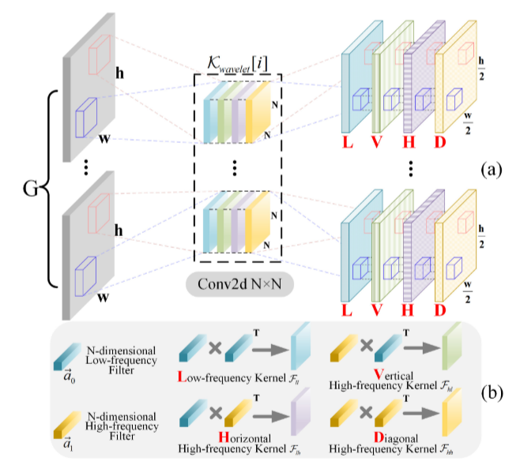